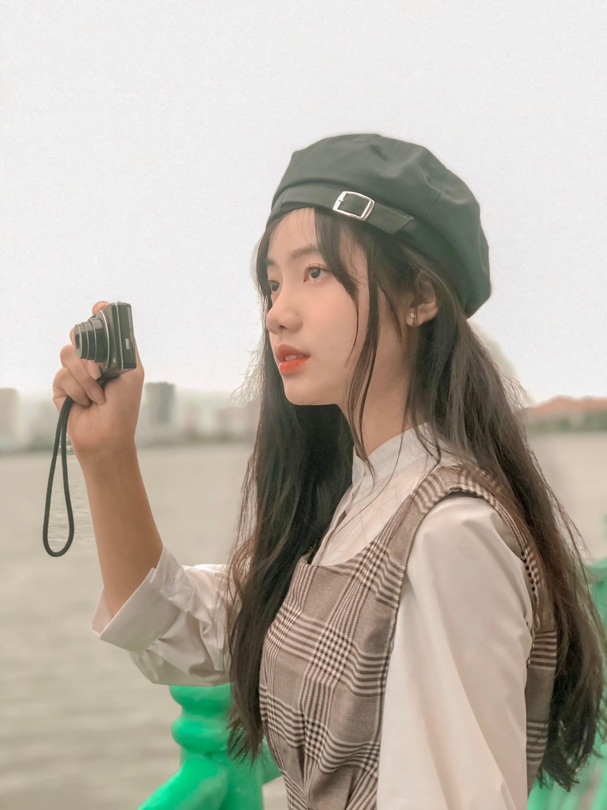
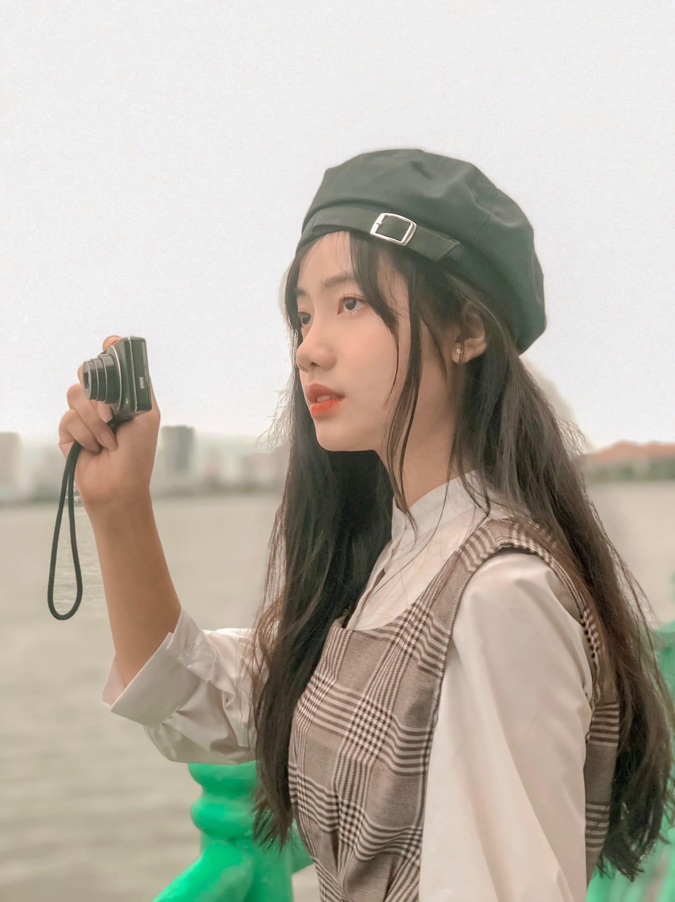

Những cảm xúc này, chẳng biết từ bao giờ đã nảy nở trong lòng tớ. Tớ không thể giấu diếm nó nữa, và đó cũng chẳng phải là một điều tồi tệ. Nhưng mỗi lần cố gắng biểu đạt, lại nhận được sự né tránh, tớ cảm thấy như mình đang bị mắc kẹt trong một vòng lặp không lối thoát. Tớ biết rằng mỗi người đều có quyền lựa chọn và cậu cũng không phải ngoại lệ. Nhưng đôi khi, việc tiếp tục theo đuổi một điều gì đó mà không nhận được sự đáp lại chỉ làm tổn thương hơn cho cả hai. Vậy nên, đây là những lời tớ muốn nói để có thể thật sự không phải suy nghĩ gì nữa. Tớ không muốn tạo sự không thoải mái nào cho cậu vì tớ rất muốn sau việc này thì chúng ta vẫn sẽ như trước. Tớ cũng không dám nói ra nguyện vọng của tớ trong này nhưng có lẽ cậu cũng sẽ biết chính xác nó là điều gì. Vậy nên tớ chỉ mong là cậu nhận món quà này trước khi tớ thật sự cất nó đi. Tớ cũng vẫn đang chuẩn bị một món quà khác nhưng đợt này tớ đang bận quá nên chưa có kịp nên là sẽ gửi đến cậu vào một ngày gần nhất hehe.